The structure will be:
- Robot and Human modelling
- Intention detection and expression
- Verbal communication
- Decision making
- Learning human behavior
- Task sharing and use cases
- Safety and ergonomics
- Ethics
Lecture 1: Introduction
HRI = even more interdisciplinary than Robotics because we take the social world in consideration and the interactions the robot has with humans.
HRI
- Robotics,
- Philosophy,
- Humans,
- Design,
- AI,
- HCI (Human Computer Interaction) i.e. Sociology & Anthropology
Robotics Robots navigate and manipulate the physical world
HRI Robots interact with people in the social world
There’s levels to this shit
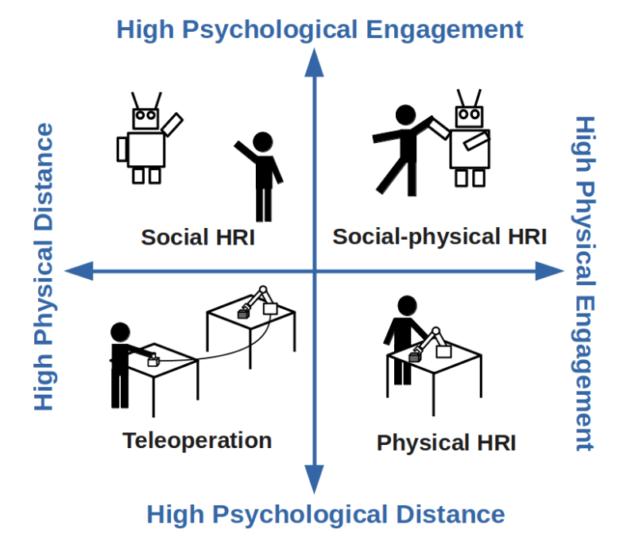
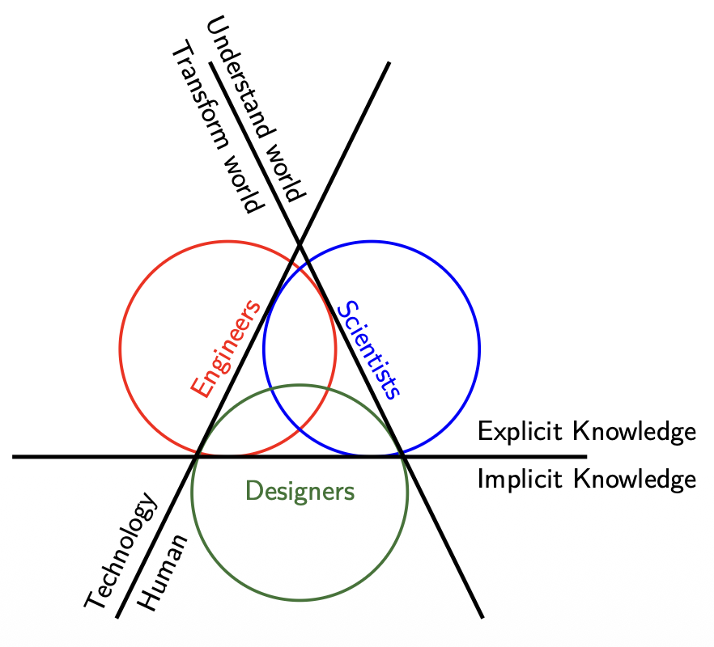
- Scientists combine the goal of Understanding the World with Explicit Knowledge to develop theories on how humans perceive robots and use the Human axis to conduct controlled behavioral studies.
- Engineers focus on Transforming the World through Technology and Explicit Knowledge, prioritizing the development of robust hardware and reliable software architectures that allow the robot to function.
- Designers bridge the gap by utilizing Implicit Knowledge and the Human axis to ensure the interaction is intuitive, focusing on the "how it feels" aspect of the robot's presence in a social environment.
Lecture 2: Robot Modelling
Robot Modelling
- Robot morphology and types
- Sensors and outputs
- Kinematics
- Challenges
Therefore, we could define a robot as an autonomous machine capable of sensing its environment, carrying out computations to make decisions, and performing actions in the real world.
Hardware: Robot Morphology
The Uncanny Valley is a critical concept in HRI that dictates how important robot morphology is.
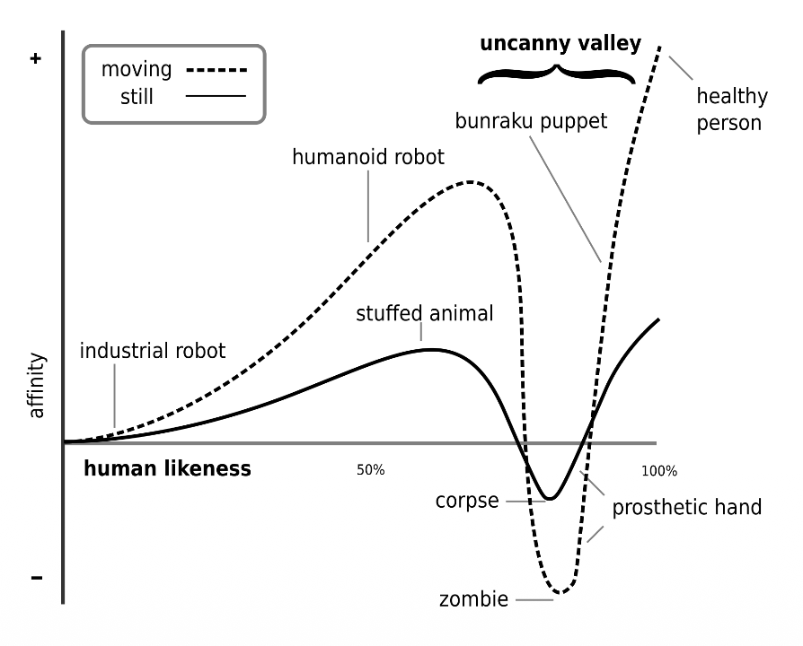
- Affinity and Likeness: As a robot becomes more human-like, our affinity for it increases.
- The Dip: When a robot is “almost” human but not quite perfect, there is a sharp drop in affinity where it becomes creepy or repulsive (labeled as “corpse” or “zombie” levels).
- The Movement Multiplier: Movement (the dashed line) amplifies these feelings. A likable robot becomes more endearing when it moves, but a creepy robot becomes significantly more disturbing.
Software: Sensors and outputs
Here we have 3 possible architectures:
- Reactive (simply sense using the sensors and then act using actuators). Open loop.
- Sense-Plant-Act (Introduce the Planning phase to the prior concept). It’s also closed-loop.
- Behavior-Based (Here we already have decision-making abilities such as avoiding objects or exploring the world).
Robot Modelling: Forward Kinematics
We describe the pose of the end-effector using a 4x4 transformation matrix (affine transformation — it makes transformations from one state to another simpler by combining the Rotation and Translation vectors into one matrix)
Forward Kinematics is the process of calculating the final position and orientation of the end effector (the robot’s “hand”) based on the angles of its joints () and the lengths of its links ().
- Chaining Transformations: We calculate individual transformation matrices for each joint ) and multiply them together to get the total transformation .
- The final matrix is a function of joint positions and link lengths .
Example
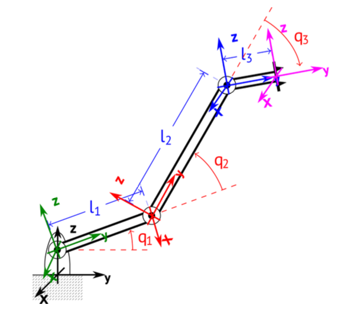
Simply understand what each value represents in the following steps and where it should be inserted if we want a Rotation around an axis or a translation along another.
Step 1: Base Frame to Joint 1
This represents a translation along the Z-axis and a rotation around the X-axis.
Step 2: Joint 1 to Joint 2
This involves a translation along the Y-axis by the length of the first link (l1) and a rotation around the X-axis.
Step 3: Joint 2 to Joint 3
This follows the same pattern, translating by link length and rotating by joint angle .
Step 4: Final Tool Tip Translation
This final matrix accounts for the length of the end effector link ().
Final Result: Forward Kinematics Matrix ()
This is the combined matrix representing the total position and orientation of the end effector relative to the base.
Therefore, we can deduce the definition:
Forward Kinematics
The FKM is a transformation matrix, a function of the joint positions and link lengths. If we know these variables, we can calculate the position and orientation of the end effector (or any other point).
Denavit-Hartenberg (DH) convention
The Denavit-Hartenberg convention define the relationship between consecutive joint frames, specifically from joint to joint . It reduces the transformation between links to four specific parameters.
- (Joint offset): The length along the Z-axis from joint i to joint i+1.
- (Joint angle): The rotation around the Z-axis between joint i and joint i+1.
- (Link length): The distance along the X-axis from joint i to joint i+1.
- (Link twist): The angle around the X-axis from joint i to joint i+1.
Robot Velocity: The Jacobian
The Jacobian is specifically defined as a matrix, where is the number of joint velocities. It relates joint velocities () to the 6D end-effector velocity vector () consisting of three linear velocities () and three angular velocities ().
Inverse Kinematics
The primary distinction between the two models is the direction of the calculation:
Difference between Forward and Inverse Kinematics
- Forward Kinematics: specific coordinate values are given to each joint where the end-effector will be located
- Inverse Kinematics: desired end-effector position what the joint coordinate values should be
As a rule of thumb, the end-effector is the terminal component that facilitates the robot’s interaction with its environment to accomplish its specific mission.
Example of Forward and Inverse Kinematics Modelling for a mobile robot (differential drive)
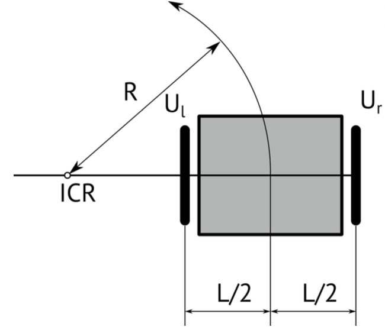
The robot’s state in the environment is defined by its Pose (), and its movement is dictated by the Control Input ().
- Pose (): The robot’s position and its orientation angle in the global frame.
- Control Input (): Consists of the robot’s linear velocity () and its angular velocity ().
In differential drive, to follow a trajectory, the robot rotates around an Instantaneous Center of Rotation (ICR) which is the point around which the robot appears to be rotating at a specific moment.
Rotation Radius (R): The distance from the ICR to the center of the robot. It is determined by the wheel velocities and the distance between wheels .
Forward Kinematics:
If we define , the final step combines these relations into a single matrix that maps the rotational velocities of the wheels to the robot’s overall velocities .
Inverse Kinematics:
Inverse kinematics for a differential drive robot involves calculating the individual wheel velocities () required to achieve a desired global robot motion or a specific rotation radius .
It’s basically writing the output in terms of the input.
And if we define the kinematics model in the world frame in terms of a homogenous transformation, we get
How do we estimate the pose when we have noise? Slap a Kalman Filter
where is the process noise and is the measurement noise
The noise signals , are considered to be normally distributed with zero means and covariance matrices and respectively. We talk about covariance when we have multiple states and we have to estimate noise for each of them.
Basically, it’s a way to introduce uncertainty in our modelling.
In the ROS ecosystem, localization is organized through a standardized hierarchy of coordinate frames to ensure different sensors and algorithms can communicate effectively. This structure follows a specific chain: earth map odom base_link.
- earth: Can be used for connecting multiple robots on different maps
- map: Calculated based on discontinuous sensors (e.g. GPS)
- odom: Calculated based on continuous sensors, (e.g. IMUs)
- base_link: Attached on the robot, as forward, left, up
There are also two ROS standard systems:
- REP 103: Defines standard units of measure and coordinate conventions.
- REP 105: Specifically defines the coordinate frames for mobile platforms mentioned above.
Lagrangian of a robot
The Lagrangian of a robot provides a condensed way to describe its dynamic behavior, relating the forces or torques acting on the joints to the resulting motion.
The general dynamic equation:
- The matrix , contains information about the inertia of the system, therefore contains all the masses and moments of inertia.
- The matrix has elements related to the centrifugal and Coriolis terms.
- (Gravity Vector): This term represents the dependence of the robot’s potential energy on its position, accounting for gravity.
- (Torque): The vector of generalized forces or torques applied to the joints
This equation above is the inverse dynamics where we want to know what torque should be applied to achieve a specific acceleration . You use this to determine how much power your motors must output to move the robot in a specific way.
The forward dynamics tells us what acceleration we get if we apply a specific torque . You use this primarily for simulation to see how the robot will actually react to motor inputs.
Lecture 3: Human Modelling
Musculoskeletal Modelling
We assume that the skeleton is formed by multiple non-deformable bodies moving under external forces.
But how come we have motion if we have rigid, non-deformable bodies?
- We talk in terms of degrees of freedom (DOF)
Mood, emotions, and expressions
How can robots detect emotion? By placing markers over our face and the relative position of this markers are fed into a NN.
Culture
When designing HRI applications, culture must be identified and respected.
Lecture 4: Intention Detection and Expression
This diagram illustrates a Shared Control framework in Human-Robot Interaction (HRI), specifically focusing on how authority is divided between a person and an autonomous agent.
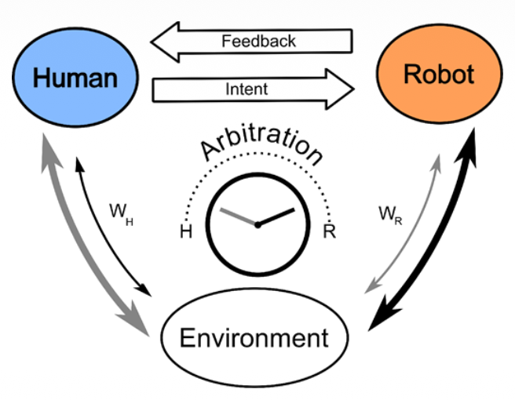
The top section shows the communication loop where the human provides Intent (commands or guidance) and receives Feedback (visual, haptic, or auditory) from the robot. At the center, the Arbitration mechanism—depicted as a dial—determines the level of assistance or control. The variables and represent the relative weights or influence each party has over the final action taken within the shared Environment.
Essentially, it models how a system decides when to follow the human’s lead versus when the robot should intervene to optimize performance or safety.
What is the difference between implicit and explicit intention?
Explicit intention is easy
- Buttons
- Predefined Gestures
- Voiced Commands
- Force Inputs
So how do we measure implicit intention? Implicit intentions are subconscious cues that a robot can use to anticipate a person’s next move.
For example, Gaze and Eye Tracking monitors where a person looks to predict their target or focus of attention before they even move. EEG (Electroencephalography) records brain activity to detect motor preparation signals. EMG(Electromyography) measures the electrical activity in muscles, catching the very beginning of a physical movement. Kinematics analyzes the geometry of motion, such as velocity and trajectory, to identify patterns in how a person is moving.
Most advanced systems use a Combination of these sensors to increase the accuracy of the robot’s “understanding” of the human.
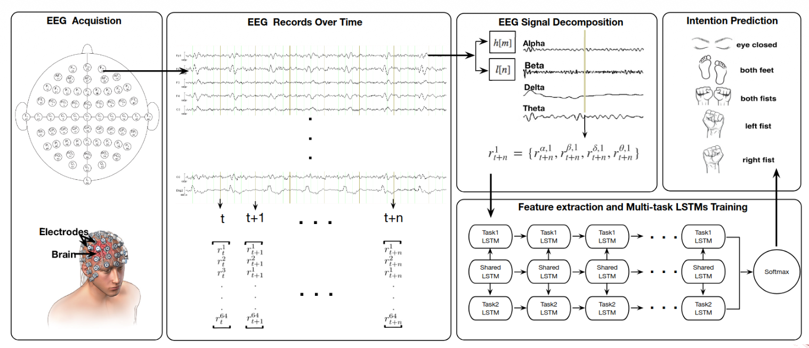
In EEG, multiple challenges arise. EEG allows for the direct, non-invasive measurement of brain activity.
- Direct measurement of brain activity
- Non-invasive
- High temporal resolution
- Low spatial resolution
- Susceptible to noise and artifacts
- Requires extensive training and calibration
From EEG to EMG:
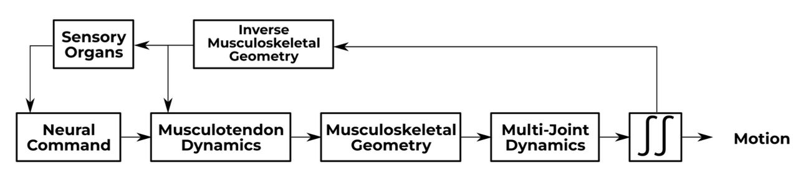
A motor unit is the connection between a motor neuron and a skeletal muscle.
EMG provides a direct measurement of muscle activation, allowing a robot to sense a movement intention before physical motion even occurs. Compared to brain-sensing (EEG), it is easier to interpret and offers high temporal resolution, meaning there is very little delay between the muscle firing and the signal being recorded. Additionally, it is a portable and relatively low-cost solution for real-world applications.
On the technical side, EMG is susceptible to noise, artifacts, and crosstalk, where signals from neighboring muscles interfere with the data. It also has limited spatial resolution, making it difficult to pinpoint exact muscle fibers. Furthermore, muscle fatigue can change the electrical signal over time, which may lead to inaccuracies if the system isn’t calibrated to account for it.
By combining these techniques, we can convert low-level signals (EEC, EMG, kinematics) to high-level semantics (e.g., ”pick up the cup”).
For interpreting intention, we need some key considerations:
- The system must be Context-aware to distinguish between a deliberate movement and a random gesture. Because biological signals vary significantly between individuals, User-specific models are required for accurate decoding. To avoid dangerous lags in robot response, the data requires Real-time processing. Systems also need robust Uncertainty handling to decide what to do when signals are noisy or ambiguous. Finally, Ethical considerations must be addressed regarding data privacy and the autonomy of the human user.
Why is it important for robots to express their intention? How can robots express their intention?
Robots express what they are about to do through several channels:
- Visual cues: Using lights, colors, or digital displays to indicate status or intended direction.
- Auditory cues: Utilizing specific sounds or synthesized speech to communicate with the user.
- Haptic feedback: Providing physical sensations like vibrations or resistive forces (often used in shared steering or teleoperation).
- Movement patterns: Using “legible motion,” where the robot’s physical trajectory is designed to be easily understood by a human observer.
This two-way communication—the robot sensing the human’s Implicit Intention and the human receiving the robot’s Expressed Intention—is what allows for a smooth, high-performance shared control system.
Lecture 5: Arbitration
Reminder of the different types of Implicit and Explicit Intention
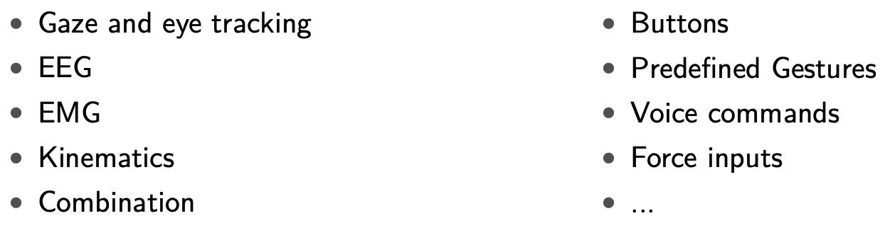
Reminder of the arbitration concept: The division of control among agents when attempting to accomplish some task. For HRI: how control is divided between human and robot.
When we talk about arbitration, we need to touch on these concepts:
- Level of arbitration: What is being shared? (e.g., goal, trajectory, low-level control, task allocation)
- Goal-level arbitration: Human selects high-level goals, robot plans and executes actions to achieve them.
- Trajectory-level arbitration: Human provides waypoints or trajectories, robot refines and executes them.
- Low-level control arbitration: Human and robot share control of actuators.
- Task allocation arbitration: Human and robot divide tasks based on capabilities and preferences.
- Timing of arbitration: When is control shared? (e.g., continuous, discrete)
- Continuous arbitration: Control is shared continuously, with both agents contributing simultaneously.
- Discrete arbitration: Control is switched between agents at specific times or events.
- Decision mechanism: How is control shared? (e.g., fixed, adaptive)
- Fixed arbitration: Control sharing is predetermined and does not change during the task.
- Adaptive arbitration: Control sharing adjusts based on context, performance, or agent states.
- Examples:
- Feeding robot learning user’s preferred eating rate
- Robot learning from human how to best hand over tools
- Understand learning style and adapt level of intervention
Arbitration Strategies
Authority-based Approaches
- Fixed: Assign different levels of control to each agent.
- Switching: Alternate control between agents based on explicit input.
- Dynamic: Adjust control levels based on task phase, confidence
Blending Approaches
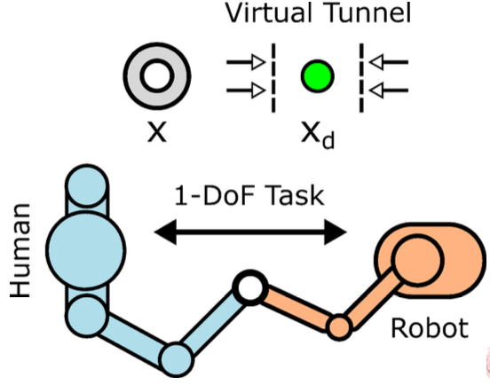
- Weighted summation: Combine inputs from both agents based on weights
- Assistive Guidance: Robot applies forces to guide human actions.
Arbitration can also occur at different degrees of freedom.
Learning-based Approaches
- Reinforcement learning: Learn optimal arbitration policy through trial and error.
- Imitation learning: Learn arbitration strategy by observing human demonstrations.
- Predictive: Anticipate human actions and adjust robot control accordingly.
Physical Arbitration
- Haptic shared control: Use haptic feedback to convey robot intentions and assist human.
- Impedance control: Modulate robot’s mechanical impedance based on human input.
- Admittance control: Adjust robot’s motion in response to human forces.
When to choose one of these strategies? Which factors influence the decision?
- Intentions: Aligned vs. conflicting
- The system must detect whether human and robot intentions are aligned or conflicting. If intentions align, a blending approach like weighted summation works well to enhance performance. If they conflict, the system needs a decision mechanism (like adaptive arbitration) to determine which agent has the most reliable information at that moment.
- Environment: Static vs. dynamic, complexity, uncertainty
- A static environment may only require fixed arbitration, where roles are predetermined. However, in dynamic or complex environments with high uncertainty, predictive or learning-based approaches are superior because they allow the robot to anticipate human needs and adjust control levels on the fly.
- Human: Skill level, cognitive load, preferences, fatigue
- Choosing a strategy requires assessing the human’s skill level, cognitive load, and fatigue. For a novice with high cognitive load, assistive guidance or haptic shared control can reduce effort. For an expert, switching control might be better to allow the human full autonomy until they explicitly request robot intervention.
- Robot: Autonomy level, capabilities, reliability
- The choice is limited by the robot’s autonomy level and reliability. A highly reliable robot can handle goal-level arbitration, where the human just sets the target. If the robot is less certain, low-level control arbitration is safer, keeping the human “in the loop” to provide continuous corrections.
The following criteria ensure that the division of control between human and robot is effective, safe, and socially responsible.
- Transparency: The system must ensure the human clearly understands why a robot is taking specific actions.
- Trust: It is essential to build and maintain the human’s confidence in the robot’s capabilities to ensure effective collaboration.
- Responsiveness: The arbitration strategy must be able to adapt quickly to changing environmental conditions or new human inputs.
- Safety: A primary goal is to prevent any physical or operational harm to the human user or the surrounding environment.
- Smoothness: The system should ensure seamless transitions when control shifts between the human and the robot.
- Ethical considerations: Designers must address the complex question of who is legally or morally responsible for actions taken while under shared control.
Lecture 6: Software Architectures in HRI
Control Paradigms
Behavior-Based Control Paradigms
Addresses how a robot manages multiple, often competing, tasks or reactions simultaneously. It focuses on the transition from simple sensing to complex action selection
Reactive Control i.e. Behavior
A small program that read sensor data and control the actuators of the robot. Each behavior deals with just one simple thing.
It works on the following principle:
What happens when we have many behaviors?
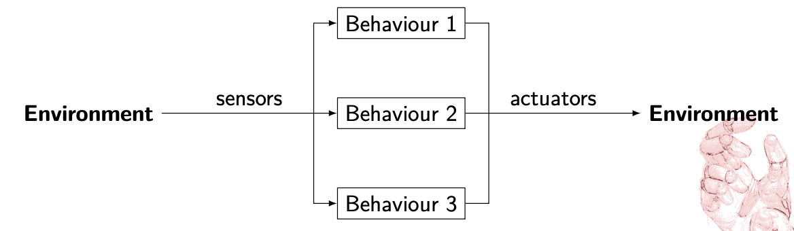
We need to prioritize! Important behaviors should inhibit/override/subsumate less important ones
When a robot is equipped with many behaviors—such as “avoid obstacles,” “follow path,” and “find dock”—it cannot execute all of them at once with equal priority. The diagram illustrates a parallel structure where environmental data is processed by multiple behavior modules simultaneously.
To prevent conflicting commands to the actuators, the system must prioritize. This is often achieved through Subsumption: higher-level, more critical behaviors (like “emergency stop” or “collision avoidance”) have the power to inhibit, override, or subsume lower-level ones. This ensures that safety-critical actions take precedence over general task goals.
So basically, a state machine
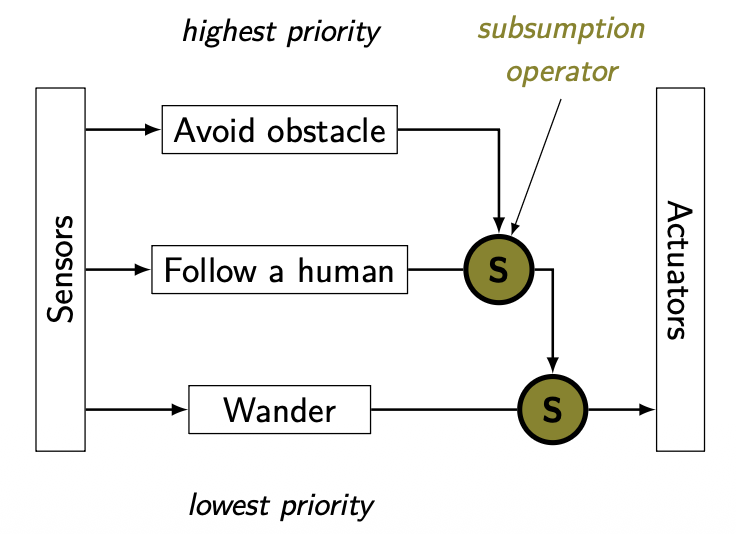
Behavior-Based/Reactive Control Advantages vs Disadvantages
Advantages
- Simple programs, easy to write
- Incremental development
- Real-time reactions
- Simple behaviors can rise to complex intelligence like behavior
Disadvantages
- Hard to implement goal-oriented tasks
- Complicated to debug
- Priority definition might be context dependent
Sense-Perceive-Plan-Act (SPPA) Framework
It’s a classic serial control paradigm in robotics. Unlike the parallel “Behavior-Based” approach, this model functions as a linear pipeline.
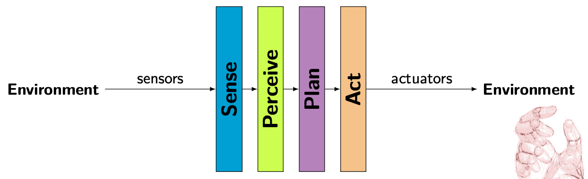
In this architecture, information flows sequentially from the environment to the robot’s actuators:
- Sense: The robot gathers raw data from the environment using its sensors.
- Perceive: The system processes that raw data to understand its surroundings (e.g., identifying objects or human presence). Sounds like segmentation to me.
- Plan: Based on its perception, the robot calculates the best course of action or trajectory to achieve a goal.
- Action: The final plan is translated into physical movement via the actuators. Also control theory comes here.
SPPA Advantages vs Disadvantages
Advantages
- Construct library of tasks and primitives
- Reuse primitives
- Achieve complex behavior
Disadvantages
- Not very agile
- Cannot react to unexpected events/situations
Behavior Trees
Invented in the gaming industry to manage complex character behaviours.
- Hierarchical structure
- Modular, Reactive
- Tick-based execution
- Graphical Representation
Core Elements of BTs
The tree is “ticked” (activated) from the Root at a fixed frequency. Every node in the tree must return one of three states: SUCCESS, FAILURE, or RUNNING.
graph TD
A[Root]
B[Composite]
C[Leaf]
A -->|Ticks| B
B -->|Ticks| C
C -.->|Execute action/condition| D[ ]
style D fill:none,stroke:none
Composite Nodes (Control Flow)
These determine how and when to visit their child nodes:
- Sequence (): Ticks children in order until one fails. It is used for tasks that must be done in a specific order (e.g., “Open door” AND “Walk through”).
graph TD
A[→] --> B[ ]
A --> C[ ]
A --> D[ ]
A --> E[ ]
A --> F[ ]
- Fallback/Selector (?): Ticks children in order until one succeeds. This is great for handling errors or alternative options (e.g., “Try Path A,” if that fails, “Try Path B”).
graph TD
Root(Root) --> Fallback{? Fallback}
Fallback --> OptionA[Primary Action]
Fallback --> OptionB[Backup Action]
- Parallel (⇒): Ticks all children simultaneously. Useful for multi-tasking, like “Move to goal” while “Scanning for obstacles.”
graph TD
A[⇒] --> B[ ]
A --> C[ ]
A --> D[ ]
A --> E[ ]
A --> F[ ]
Leaf Nodes (The “Doers”)
These are the endpoints of the tree that interact with the world:
- Action: Performs a physical or computational task (e.g., “Move arm”).
- Condition: Checks a state in the environment (e.g., “Is object gripped?”).
Decorator Nodes
These have only one child and modify its behavior.
graph TD
A{δ} --> |Policy| B[Child]
- Inverter: Flips Success to Failure and vice versa.
- Repeater: Re-runs the child node a set number of times.
- Limiter/Force Success: Restricts execution time or forces a specific return state.
Examples
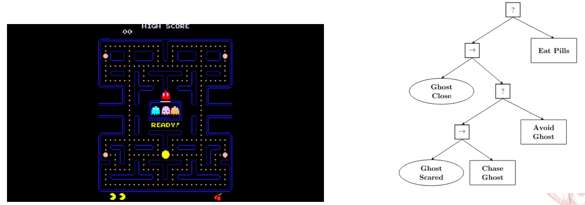
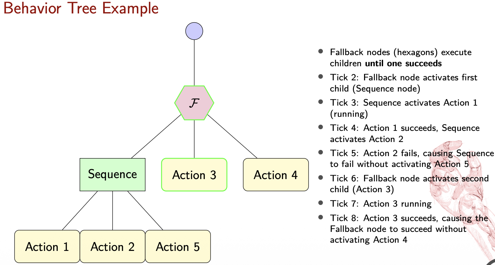
Behavior Trees Advantages vs Disadvantages
Advantages
- Modular
- Reusable
- Reactive
- Easy to visualize and debug
Disadvantages
- Real-time reactions might be hard to guarantee
- Lack of formal verification methods
Hybrid Approach
It organizes robot intelligence into three distinct layers based on time scales and problem types.
1. Low-level Control (Reactive)
This layer handles immediate, physical actions that require high-frequency responses, typically on a time scale of under a second.
- Focus: Continuous-valued problems, such as maintaining balance or determining precise leg placement during a step.
- Nature: Purely reactive to sensor data to ensure stability and safety.
2. Intermediate Level Control
This layer manages the robot’s specific capabilities and bridges the gap between a plan and raw movement.
- Focus: Tasks like navigating to a specific destination or picking up an object.
- Nature: Operates on a time scale of a few seconds and deals with both continuous and discrete problems.
3. High-level Control (Deliberative)
This is the “brain” of the robot, responsible for long-term strategy and planning.
- Focus: Discrete problems with long time scales, often measured in minutes.
- Example: Calculating a complex plan for moving several boxes out of a room.
Implementation Engines and Libraries
- FlexBe Behavior Engine: A powerful and user-friendly high-level behavior engine for ROS that uses a drag-and-drop interface for creating complex robot behaviors. It allows for automated code generation and real-time monitoring of behavior execution.
- BehaviorTree.CPP 4.6: A specialized C++ library designed specifically to build and manage the Behavior Trees discussed earlier.
- ROS2 Planning System 2 (PlanSys2): A deliberative planning framework that uses PDDL (Planning Domain Definition Language) models to coordinate complex robot tasks. It includes specific components like an Executor, Planner, and Domain/Problem Experts to manage high-level reasoning.
Lecture 7: Safety and Ethics in HRI
ISO 12100 Definition
Freedom from risk which is not tolerable.
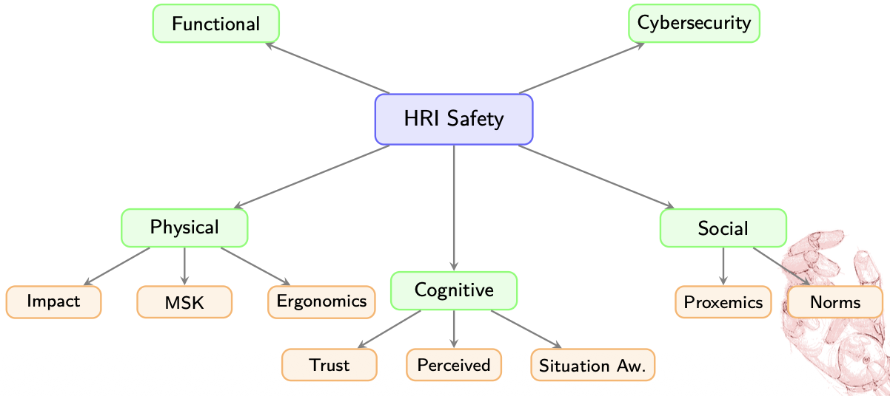
Physical Safety
How do we deal with it?
- Reactive control (respond to detected hazards)
- Prevention control (planning, obstacle avoidance)
- Inherently safe design (soft materials, compliant actuators)
Key Principle
Defense in depth: multiple layers of protection
Key Standards:
- EN ISO 13482: Personal care robots
- EN ISO 10218-1/2: Industrial robots
- ISO/TS 15066: Collaborative robots with 4 methods:
- Safety-rated monitored stop
- Hand guiding
- Speed and separation monitoring
- Power and force limiting
In reactive prevention control, there is the risk of the local minima which can cause the robot to get stuck.
Ergonomics: Enhance safety, health, and comfort by applying psychological and physiological principles in engineering
An example of a systematic approach to ergonomic assessment using biomechanical models:
If we consider the Human Dynamics Equation:
Then its optimization is minimizing the cumulative joint effort
plmfgm … TBC